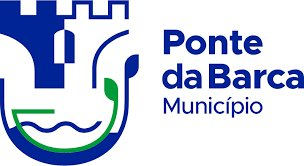
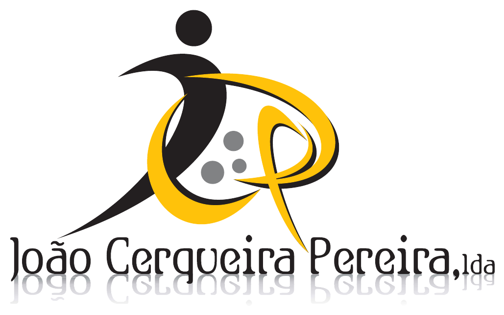

Parceiros
Parceiros e patrocinadores da edição 2026
O Torneio Terras da Nóbrega agradece a todos os parceiros e patrocinadores que tornam este evento possível.


Interessado em apoiar o torneio? Contacta-nos: torneio.terrasdanobrega@gmail.com